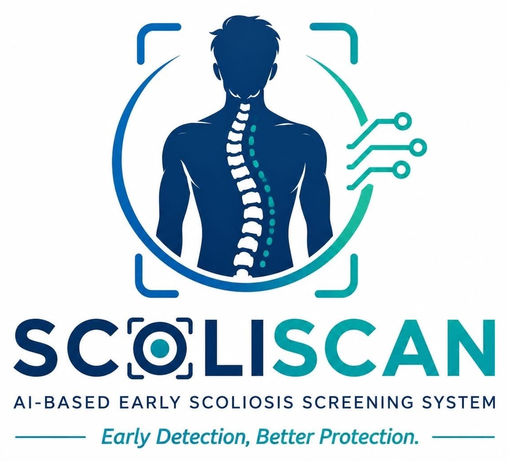
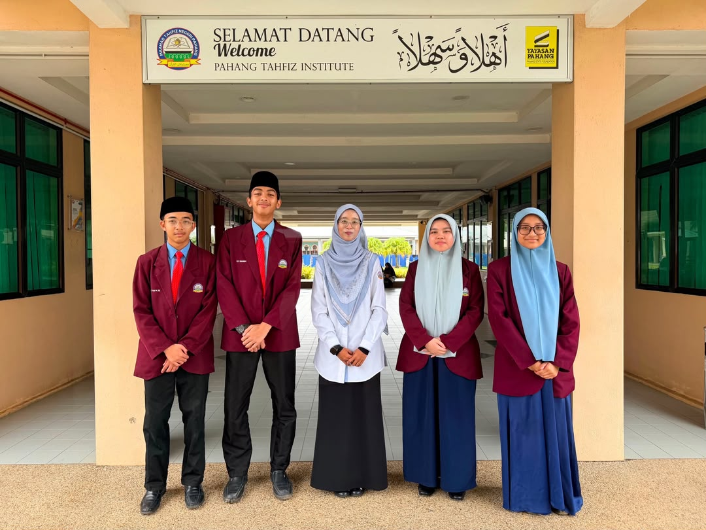

◎
Camera-based screening
Uses a laptop or mobile camera—equipment that schools already have.

SCOLISCAN is a camera-based AI prototype that identifies visible posture asymmetry at the shoulders, hips and torso—helping schools promote earlier awareness and professional follow-up.
Students may not notice uneven shoulders, an uneven waistline or a sideways body lean. SCOLISCAN turns an ordinary camera into an accessible educational screening tool.
Uses a laptop or mobile camera—equipment that schools already have.
Locates shoulder and hip points to calculate visible posture asymmetry.
Encourages a repeat check and professional assessment when signs remain.
The system supports education and early screening. It does not replace medical examination or radiographic assessment.
Stand upright with your back facing the camera so SCOLISCAN can perform an initial posture assessment.
AI detects shoulder and hip landmarks and calculates visible posture asymmetry.
See the screening status together with shoulder tilt, hip tilt, torso shift and landmark confidence.
Receive screening-informed posture exercise suggestions and general spinal-health guidance.
Follow the recommended next step and seek professional assessment when persistent signs are detected.
SCOLISCAN analyses visible posture, displays a screening result, suggests general posture exercises, provides spinal-health guidance and encourages early professional follow-up when needed.
SCOLISCAN does not diagnose scoliosis. Any persistent concern should be assessed by a qualified healthcare professional.
Activate the camera to begin.
AI pre-selects observations from the measured posture. Review them before confirming the manual check.
Activate the camera and capture an image to view the prototype result.
Your posture measurements will appear here after a successful scan.
SCOLISCAN will summarise the screening status in clear language.
These are general posture and mobility activities, not personalised medical treatment.
Guidance will appear after the scan.
A next-step recommendation will appear after the scan.
Safety note: SCOLISCAN is an educational screening prototype. Stop any exercise that causes pain or discomfort. It does not diagnose scoliosis or prescribe treatment.
Supports a comfortable screening experience without physical contact.
A simple workflow designed for school demonstrations and awareness programmes.
Works with existing cameras instead of specialised screening hardware.
Can grow through ethical datasets, expert validation and improved AI models.
The prototype does not replace clinicians. It helps students and schools notice visible posture differences and respond responsibly.
These are the points the team should explain confidently to judges and users.
No. SCOLISCAN is an educational early-screening prototype based on visible posture asymmetry. Diagnosis must be performed by a qualified healthcare professional.
In this prototype, images are processed in the browser and are not uploaded to a server. Refreshing or closing the page removes the displayed image.
Cameras are widely available, contactless and suitable for building an affordable school-level prototype.
The next stage is expert consultation, ethical data collection, accuracy testing and validation against professional assessment.
Meet the Form 4 student innovators behind SCOLISCAN from Maahad Tahfiz Negeri Pahang.

STUDENT-LED INNOVATIONEmail the team directly
Contact the Form 4 Team ↗ Gmail will open in a new tab with the recipient, subject and message already prepared.